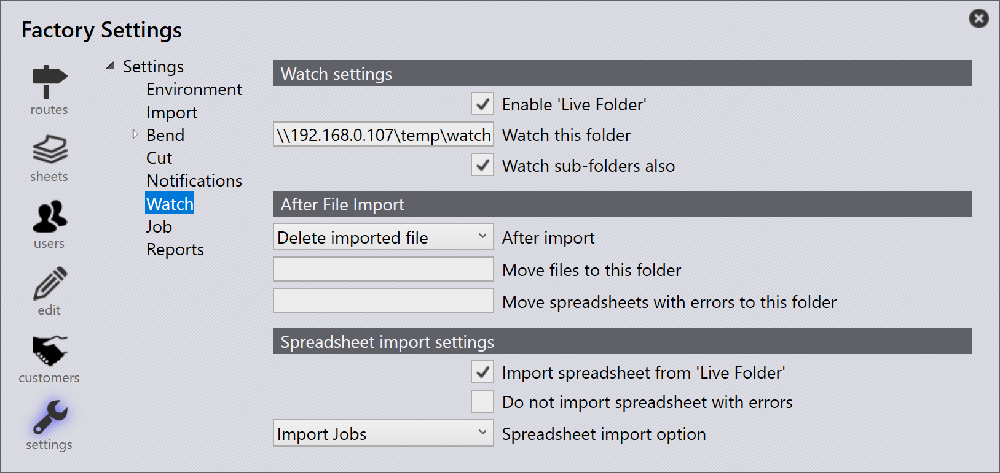

Überwachung
Die Überwachungseinstellungen ermöglichen es TruSmartCAM, einen festgelegten Ordner zu überwachen und Dateien automatisch in das System zu importieren. Dies unterstützt den automatischen Import von Teilen, Aufträgen, Baugruppen und Bestellungen ohne manuellen Eingriff.

Beobachtungseinstellungen
„Live-Ordner“ aktivieren - Aktiviert die automatische Überwachung des angegebenen Ordners.
Diesen Ordner beobachten - Gibt den zu überwachenden Ordner für eingehende Dateien an.
Auch Unterordner beobachten - Bezieht alle Unterordner in den Überwachungsprozess ein.
Nach dem Dateiimport
Nach dem Import - Nach dem Import der Datei hat der Benutzer zwei Optionen. Die Datei kann vom Speicherort gelöscht oder an einen anderen Speicherort verschoben werden.
-
Delete imported file - Entfernt die Quelldatei nach einem erfolgreichen Import.
-
Move imported file - Verschiebt die Quelldatei in den unter Move files to this folder angegebenen Ordner nach einem erfolgreichen Import.
Dateien in diesen Ordner verschieben - Gibt den Zielordner an, in den erfolgreich importierte Dateien verschoben werden sollen, wenn After import auf Move imported file eingestellt ist.
Tabellenblätter mit Fehlern in diesen Ordner verschieben - Verschiebt fehlgeschlagene Importe in den angegebenen Fehlerordner.
Einstellungen für Tabellenblattimport
Tabellenblatt aus „Live-Ordner“ importieren - Importiert automatisch Tabellendateien, die im Überwachungsordner erkannt werden.
Kein Tabellenblatt mit Fehlern importieren - Verhindert den Import von Dateien, die Validierungsfehler enthalten.
Option für Tabellenblattimport - Wählt den Typ der zu importierenden Daten aus dem Dropdown aus. Unterstützte Tabellenformate können CSV, XLSX oder XML umfassen. Die verfügbaren Optionen sind:
-
Jobs_importieren - Importiert Auftragsdaten aus der Tabelle.
-
Aufträge importieren - Importiert Bestelldaten aus der Tabelle.
-
Baugruppen importieren - Importiert Baugruppendaten aus der Tabelle.
-
Teile importieren - Importiert Teiledaten aus der Tabelle.
Zusätzliche Informationen
|